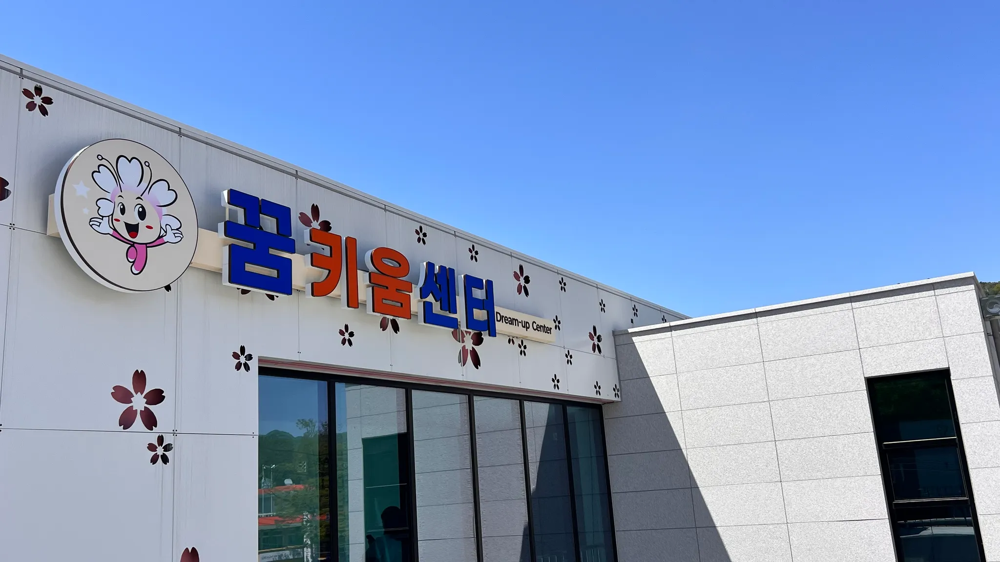

일상 가까이에서 배우고 누리는 주민 프로그램

Vision
온세대가 지속가능한 꿈을 키우는 군북면 생활문화 거점
비전
마을의 오늘을 잇고, 내일의 꿈을 함께 키우는 군북면 꿈키움센터
군북의 사람과 공간, 배움과 로컬 자원이 자연스럽게 이어지는 플랫폼을 지향합니다.
마을이 직접 기획하고 참여하는 공동체 활동
모임, 교육, 기록을 담는 다목적 생활공간
계절 농산물과 마을 이야기를 밖으로 잇는 연결
Core Values